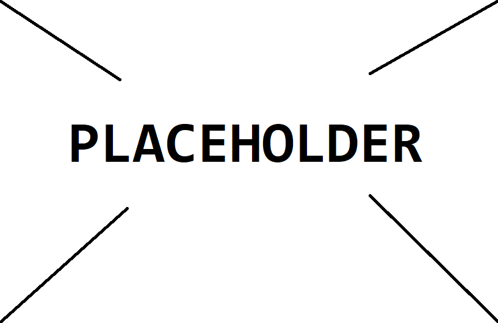
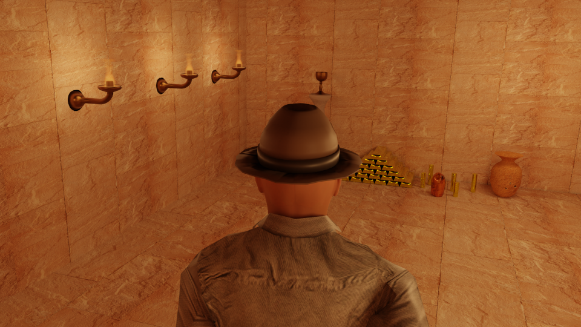
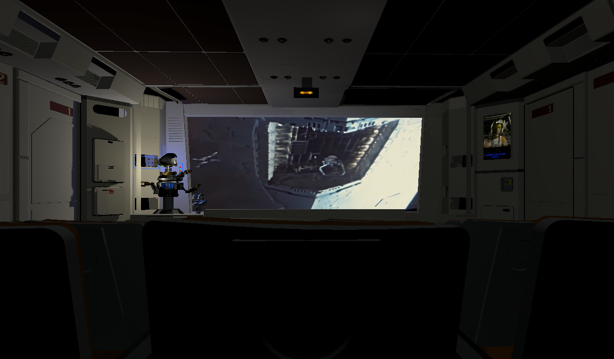
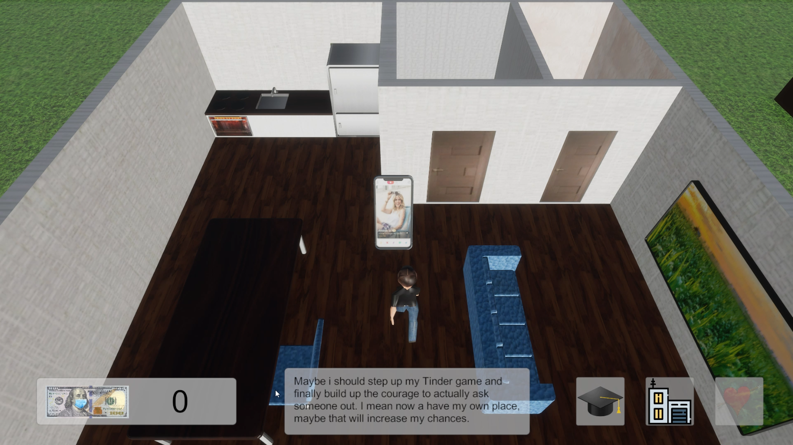
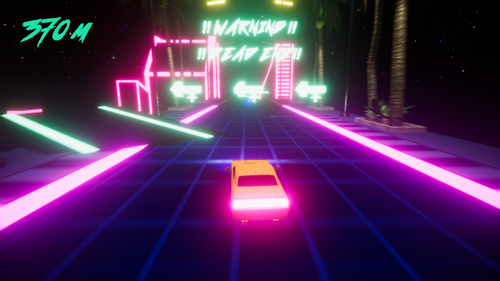
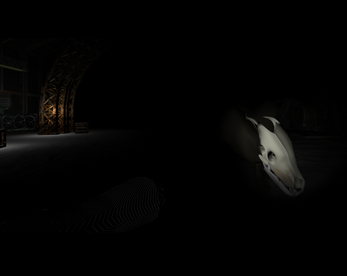
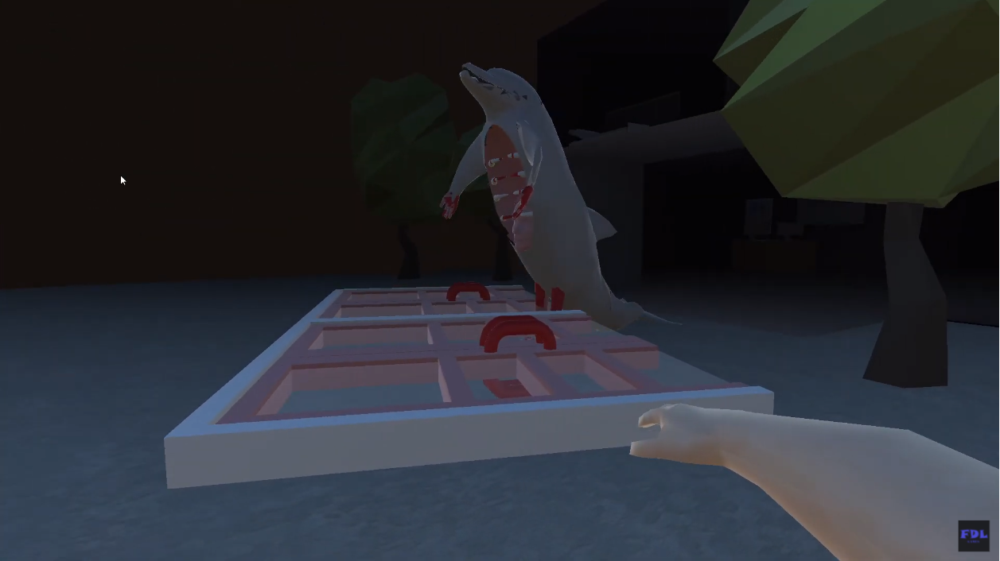

University projects
Here are some of the projects a worked on while studying medialogy at Aalborg University in Copenhagen:
P1: Chipping Into Society

P3: D&D Using Image Processing

P4: Making a Museum Alive

P5: Adaptive Storytelling

P6: Ancient History

3D Movie: Dwayedyana Jones
Unity projects from Game jams and other
Here are some games I made at game jams and developed in my free time:

RollerBoy

Candy Shoot

Star Tours 1992 VR

Chad Game

Turbo Cow

Breaking Point VR

Color Run

Dolphin Horror Game
© FDL Games 2022